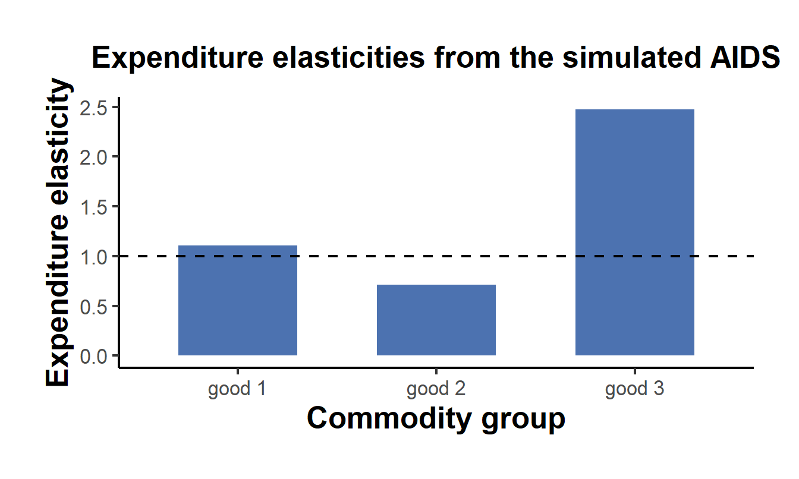

Chapter 67 Demand Systems
This chapter is the continuous-demand complement to the discrete-choice treatment of differentiated products in Section 60. There, a consumer chose one product from a menu and demand was an integral of choice probabilities. Here, the consumer instead allocates a fixed budget across several continuously divisible commodity groups, and the object of interest is the system of demand functions that describes how those quantities respond to prices and total expenditure. Both approaches descend from utility maximization, but they answer different empirical questions. Discrete choice is the natural language for markets of many distinct varieties where each consumer buys essentially one unit of one variety, such as automobiles or breakfast cereals. A demand system is the natural language for broad consumption aggregates, such as food, housing, transport, and services, where households consume positive amounts of every group simultaneously and the analyst cares about how the whole bundle shifts with prices and income.
The payoff of taking utility maximization seriously is a set of cross-equation restrictions, namely adding-up, homogeneity, symmetry, and negativity, that discipline estimation and let us recover welfare-relevant quantities such as cost-of-living indices and the deadweight loss of a price change. This chapter develops the consumer theory that generates those restrictions, surveys the flexible functional forms that made systemwide estimation practical, and works through estimation and elasticity calculation with a small simulated example.
67.1 Continuous Demand and Consumer Theory
Consider a consumer who chooses a vector of quantities \(q = (q_1, \dots, q_n)\) to maximize a utility function \(u(q)\) subject to the budget constraint \(p'q = x\), where \(p\) is the vector of prices and \(x\) is total expenditure (often loosely called income). The solution is the system of Marshallian (uncompensated) demand functions \(q_i = g_i(p, x)\). Substituting these back into utility gives the indirect utility function \(v(p, x) = u(g(p, x))\), which records the maximum utility attainable at given prices and budget. The dual problem minimizes the cost \(p'q\) of reaching a fixed utility level \(\bar u\) and yields the Hicksian (compensated) demand functions \(q_i = h_i(p, \bar u)\), together with the expenditure function \(e(p, \bar u) = p'h(p, \bar u)\), the minimum outlay needed to attain \(\bar u\).
The two demand concepts coincide at the optimum, \(g_i(p, x) = h_i(p, v(p, x))\), and the link between their price responses is the Slutsky equation,
\[\frac{\partial g_i}{\partial p_j} = \frac{\partial h_i}{\partial p_j} - q_j \frac{\partial g_i}{\partial x}.\]
The first term on the right is the pure substitution effect at constant utility, and the second is the income effect that arises because a price change alters real purchasing power. The Marshallian response that we observe in market data is the sum of a substitution effect that we cannot observe directly and an income effect that we can. This decomposition is the reason elasticities come in two flavors, and it is the reason welfare analysis must work with the compensated, utility-constant object.
Any demand system that genuinely comes from utility maximization must satisfy four properties, which become testable restrictions once we adopt a functional form.
- Adding-up. Demands exhaust the budget, \(\sum_i p_i g_i(p, x) = x\). Equivalently the budget shares \(w_i = p_i q_i / x\) sum to one. This is an identity, not a behavioral assumption, and it implies that the parameters of one equation are determined by the others.
- Homogeneity. Demands are homogeneous of degree zero in prices and expenditure jointly, \(g_i(\lambda p, \lambda x) = g_i(p, x)\). Scaling all prices and the budget by the same factor leaves real choices unchanged, so only relative prices and real income matter. There is no money illusion.
- Slutsky symmetry. The matrix of compensated price responses is symmetric, \(\partial h_i / \partial p_j = \partial h_j / \partial p_i\). Symmetry is the integrability condition that signals the demands descend from a single coherent preference ordering rather than an arbitrary collection of equations.
- Negativity. The Slutsky substitution matrix is negative semidefinite, which delivers the law of demand that own compensated price effects are nonpositive.
The converse direction, recovering preferences from demands, is the integrability problem. Given a candidate system of demand functions, when do there exist preferences that rationalize it? The answer is precisely when adding-up, homogeneity, symmetry, and negativity hold. This is what makes those four properties more than book-keeping. They are the exact conditions under which the estimated equations can be interpreted as the behavior of a utility-maximizing consumer, and only then can the fitted system be used for welfare statements.
The choice between a demand system and discrete choice is therefore a modeling decision about the consumption margin. When the relevant margin is which single variety to buy and the catalog of varieties is large, discrete choice with its low-dimensional characteristic space is the tractable route, as developed in Section 60. When the relevant margin is how to divide a budget across a handful of broad groups that are all consumed together, a demand system is appropriate, and the small number of groups keeps the full matrix of own and cross price elasticities estimable.
67.2 Flexible Functional Forms
A demand system is operational only once \(u(q)\), or equivalently \(v(p, x)\) or \(e(p, \bar u)\), is given a parametric form. The history of the field is a sequence of forms that progressively relaxed restrictions on the substitution patterns the data are allowed to reveal.
The Linear Expenditure System of Stone (Stone 1954) is the simplest complete system that satisfies the theoretical restrictions. It arises from Stone-Geary preferences and writes expenditure on good \(i\) as \(p_i q_i = p_i \gamma_i + \beta_i (x - \sum_k p_k \gamma_k)\), where \(\gamma_i\) is a committed or subsistence quantity and \(\beta_i\) is the marginal budget share of supernumerary income. The system is parsimonious and globally regular, but its additive preference structure forces all goods to be substitutes and rules out inferior goods, so the income and price elasticities it can express are tightly constrained. It is useful as a benchmark rather than as a flexible description of behavior.
The Rotterdam model of Barten and Theil (Barten 1969) takes a different route. Rather than specifying preferences and deriving demands, it writes the system directly in budget-share-weighted log differences,
\[w_i \, d\ln q_i = \beta_i \, d\ln Q + \sum_j \pi_{ij} \, d\ln p_j,\]
where \(d\ln Q = \sum_k w_k \, d\ln q_k\) is the Divisia volume index. The parameters \(\beta_i\) and \(\pi_{ij}\) are constants to be estimated, and the theoretical restrictions map cleanly onto linear constraints on them: adding-up requires the coefficients to sum appropriately across equations, homogeneity requires \(\sum_j \pi_{ij} = 0\), and symmetry requires \(\pi_{ij} = \pi_{ji}\). The Rotterdam model is a differential approximation rather than an exact parametric system, which is both its strength, since it imposes little global structure, and its limitation, since the parameters are local and the income elasticities are constant by construction.
The translog and AIDS family achieves second-order flexibility, meaning the form can match the level, first derivatives, and second derivatives of an arbitrary cost or utility function at a point. The transcendental logarithmic (translog) specification of Christensen, Jorgenson, and Lau (Christensen et al. 1975) writes the indirect utility or cost function as a quadratic form in the logarithms of prices and income. Because the second-order terms are unrestricted, the translog places no a priori restriction on the elasticities of substitution, and the homogeneity and symmetry conditions again reduce to linear restrictions on the parameters. The Almost Ideal Demand System, developed next, belongs to this family and has become the workhorse because its share equations are close to linear in the parameters.
67.3 The Almost Ideal Demand System
The Almost Ideal Demand System (AIDS) of Deaton and Muellbauer (Deaton and Muellbauer 1980) starts from a cost function in the price-independent generalized logarithmic (PIGLOG) class, which permits exact aggregation from individual households to market data. The cost function is
\[\ln e(p, u) = \alpha_0 + \sum_i \alpha_i \ln p_i + \tfrac{1}{2} \sum_i \sum_j \gamma_{ij}^* \ln p_i \ln p_j + u \, \beta_0 \prod_i p_i^{\beta_i}.\]
Applying Shephard’s lemma and rearranging gives the AIDS in its celebrated budget-share form,
\[w_i = \alpha_i + \sum_j \gamma_{ij} \ln p_j + \beta_i \ln\!\left(\frac{x}{P}\right),\]
where \(w_i\) is the budget share of good \(i\), the \(\gamma_{ij}\) are symmetrized price coefficients, and \(\ln P\) is a price index defined by
\[\ln P = \alpha_0 + \sum_k \alpha_k \ln p_k + \tfrac{1}{2} \sum_k \sum_l \gamma_{kl} \ln p_k \ln p_l.\]
The theoretical restrictions take a transparent linear form in this parameterization. Adding-up requires \(\sum_i \alpha_i = 1\), \(\sum_i \gamma_{ij} = 0\), and \(\sum_i \beta_i = 0\). Homogeneity requires \(\sum_j \gamma_{ij} = 0\) for each \(i\), so that a proportional rise in all prices leaves shares unchanged. Symmetry requires \(\gamma_{ij} = \gamma_{ji}\). These map directly onto cross-equation parameter restrictions that can be imposed during estimation or tested afterward.
The one inconvenience is that the price index \(\ln P\) is itself nonlinear in the parameters, which makes the exact AIDS a nonlinear system. Deaton and Muellbauer suggested replacing \(\ln P\) with a known price index, most commonly the Stone index \(\ln P^* = \sum_k w_k \ln p_k\), which renders the share equations linear in the parameters. This is the linear-approximate AIDS (LA-AIDS), and it is the version most often estimated because each equation becomes an ordinary linear regression. The approximation is good when relative prices are not too dispersed, though it introduces a known small-sample bias because the Stone index uses the endogenous shares.
A limitation of the basic AIDS is that budget shares are linear in \(\ln(x/P)\), which forces Engel curves of a fixed shape and cannot capture goods that are luxuries at low income and necessities at high income. The Quadratic AIDS (QUAIDS) of Banks, Blundell, and Lewbel (Banks et al. 1997) adds a quadratic expenditure term,
\[w_i = \alpha_i + \sum_j \gamma_{ij} \ln p_j + \beta_i \ln\!\left(\frac{x}{P}\right) + \frac{\lambda_i}{b(p)} \left[\ln\!\left(\frac{x}{P}\right)\right]^2,\]
where \(b(p) = \prod_i p_i^{\beta_i}\) is a Cournot aggregator of prices. The extra term lets the income elasticity vary with the income level, so that empirically observed nonlinear Engel curves can be matched while the theory restrictions are preserved. QUAIDS nests AIDS as the special case \(\lambda_i = 0\) for all \(i\), which makes the quadratic term a directly testable extension.
67.4 Replication: A US Food Demand System
The simulated example above isolates the mechanics of systemwide estimation, but a replication on real data shows what an AIDS analysis looks like in practice and how its parameters are read. We use the Blanciforti86 data distributed with the micEconAids package, which records annual US per capita food consumption from 1947 to 1978 disaggregated into four broad food groups. For each year the data give the budget share of each group and the corresponding price, together with total food expenditure. We estimate the linear-approximate AIDS on the first 32 observations, the span over which the four groups are consistently measured.
The object of estimation is the budget-share system \(w_i = \alpha_i + \sum_j \gamma_{ij} \ln p_j + \beta_i \ln(x / P)\), where \(x\) is total food expenditure and \(\ln P\) is replaced by the Stone price index \(\ln P^* = \sum_k w_k \ln p_k\). Replacing the nonlinear AIDS price index with the Stone index makes each share equation linear in the parameters, so the system can be estimated by iterated seemingly unrelated regressions with adding-up, homogeneity, and symmetry imposed as linear constraints. The aidsEst function from micEconAids carries out exactly this procedure and returns both the parameter estimates and a routine, aidsElas, that maps them into elasticities at a chosen point.
library(micEconAids)
data("Blanciforti86", package = "micEconAids")
priceNames <- c("pFood1", "pFood2", "pFood3", "pFood4")
shareNames <- c("wFood1", "wFood2", "wFood3", "wFood4")
est <- aidsEst(priceNames, shareNames, "xFood",
data = Blanciforti86[1:32, ], method = "LA:SL")
el <- aidsElas(est$coef,
prices = colMeans(Blanciforti86[1:32, priceNames]),
shares = colMeans(Blanciforti86[1:32, shareNames]))The first table collects the intercepts \(\alpha_i\), the expenditure coefficients \(\beta_i\), and the symmetric matrix of price coefficients \(\gamma_{ij}\). The second table reports the expenditure elasticities and the own-price elasticities evaluated at the mean prices and shares.
coef_tab <- data.frame(
group = paste0("Food", 1:4),
alpha = est$coef$alpha,
beta = est$coef$beta,
est$coef$gamma
)
colnames(coef_tab)[4:7] <- paste0("gamma_", 1:4)
knitr::kable(
coef_tab,
row.names = FALSE,
digits = 3,
caption = "Linear-approximate AIDS estimates for four US food groups, annual data 1947 to 1978. The alpha column holds the intercepts, beta the expenditure coefficients, and the gamma block the symmetric matrix of price coefficients."
)| group | alpha | beta | gamma_1 | gamma_2 | gamma_3 | gamma_4 |
|---|---|---|---|---|---|---|
| Food1 | -0.255 | 0.329 | 0.111 | -0.139 | -0.012 | 0.040 |
| Food2 | 0.110 | 0.056 | -0.139 | 0.158 | -0.003 | -0.016 |
| Food3 | 0.261 | -0.075 | -0.012 | -0.003 | 0.015 | 0.001 |
| Food4 | 0.884 | -0.310 | 0.040 | -0.016 | 0.001 | -0.024 |
# aidsElas returns expenditure elasticities and a Marshallian (uncompensated)
# price-elasticity matrix; resolve the components by name defensively so the
# table builds across package versions.
exp_elas <- el[[grep("^exp", names(el), value = TRUE)[1]]]
marsh_elas <- el[[grep("marsh", names(el), value = TRUE)[1]]]
elas_tab <- data.frame(
group = paste0("Food", 1:4),
expenditure = as.numeric(exp_elas),
own_price = diag(as.matrix(marsh_elas))
)
knitr::kable(
elas_tab,
row.names = FALSE,
digits = 3,
caption = "Expenditure and own-price (Marshallian) elasticities for the four food groups at mean prices and budget shares. Own-price elasticities are negative, and expenditure elasticities above one mark luxuries."
)| group | expenditure | own_price |
|---|---|---|
| Food1 | 2.059 | -0.377 |
| Food2 | 1.279 | -0.240 |
| Food3 | 0.443 | -0.745 |
| Food4 | 0.128 | -0.298 |
The estimates can be read directly off the theory. The expenditure coefficients are \(\beta = (0.329, 0.056, -0.075, -0.310)\). A positive \(\beta_i\) means the budget share of group \(i\) rises as total food expenditure grows, which by \(e_i = 1 + \beta_i / w_i\) implies an expenditure elasticity above one, so the group behaves as a luxury. Group 1 has the largest positive coefficient and is the clearest luxury in the system. The negative coefficients on groups 3 and 4 mean their shares fall as the food budget expands, giving expenditure elasticities below one, the signature of a necessity. This is Engel’s law in the cross section of food: as households spend more in total, the composition of the food basket tilts away from staple necessities and toward higher-value groups.
Two further checks confirm that the fitted system behaves like the choices of a utility-maximizing consumer. First, the price coefficient matrix is symmetric, \(\gamma_{ij} = \gamma_{ji}\), as the off-diagonal entries in the coefficient table show, for example \(\gamma_{12} = \gamma_{21} = -0.139\). This is Slutsky symmetry imposed during estimation, the integrability condition that lets the equations be read as a single coherent preference ordering rather than an arbitrary collection of regressions. Second, the own-price elasticities on the diagonal of the Marshallian matrix are all negative, consistent with the law of demand. Together the symmetric \(\gamma\) matrix and the negative own-price elasticities are the empirical counterparts of the symmetry and negativity properties that distinguish a genuine demand system from a reduced-form fit.
Several refinements matter for a publication-grade analysis. The homogeneity and symmetry restrictions used here are imposed rather than tested, which is the common practice because they are required for the welfare interpretation, but they can be tested first with a likelihood-ratio or Wald statistic comparing the restricted and unrestricted systems, and applied work routinely reports that test even when it imposes the restrictions regardless. The linear-approximate form rests on the Stone index, whose use of the endogenous shares introduces a known small-sample bias; estimating the exact nonlinear AIDS, or the QUAIDS extension with its quadratic expenditure term, removes the approximation and lets the expenditure elasticities vary with the income level so that nonlinear Engel curves are captured (Banks et al. 1997). Finally, total expenditure enters the right-hand side through \(\ln(x/P)\) and is potentially endogenous if unobserved determinants of the budget shares are correlated with how much a household spends in total; the standard remedy is to instrument total expenditure with income, which drives the food budget but is arguably separable from its within-budget allocation (Deaton and Muellbauer 1980).
Demand systems estimated in exactly this way are a standard tool well beyond the seminar room. National statistical agencies use them to build true cost-of-living indices and to measure the welfare cost of inflation, since the budget shares are the natural weights in a utility-constant price index and the substitution that compensated demands capture is what separates a true index from a fixed-weight Laspeyres approximation. Governments and finance ministries use them for tax-incidence and food-policy analysis, tracing how a change in indirect taxes or food prices redistributes real income across rich and poor households whose budget shares differ. The same estimated elasticities appear as expert evidence in indirect-tax design and in competition cases, where the cross-price elasticities define market boundaries and quantify the consumer harm from a price increase or a merger.
67.5 Estimation
Because the budget shares sum to one, the share equations are not independent. The error terms across equations sum to zero at every observation, so the system covariance matrix is singular and one equation must be dropped during estimation. The parameters of the dropped equation are recovered afterward from the adding-up restrictions. The natural estimator for a set of equations with correlated errors and common regressors is seemingly unrelated regressions (SUR), which exploits the cross-equation error correlation to gain efficiency over equation-by-equation ordinary least squares. For the exact AIDS the price index is nonlinear and the system must be estimated by nonlinear SUR or full-information maximum likelihood, the approach pioneered for complete demand systems by Barten (Barten 1969); for the linear-approximate AIDS each equation is linear and iterated SUR (which is equivalent to maximum likelihood under normality) applies directly.
The theoretical restrictions enter as linear constraints on the stacked parameter vector. Homogeneity is a within-equation restriction, \(\sum_j \gamma_{ij} = 0\), and symmetry is a cross-equation restriction, \(\gamma_{ij} = \gamma_{ji}\). Both can be imposed by reparameterizing the design matrix or by restricted least squares, and both can be tested with a likelihood-ratio or Wald statistic comparing the restricted and unrestricted fits. A standard empirical finding is that homogeneity and symmetry are often rejected statistically yet imposed anyway, because the restrictions are required for the welfare interpretation and the rejections are plausibly an artifact of dynamics and aggregation that the static model omits.
Two endogeneity concerns deserve attention. First, total expenditure \(x\) appears on the right-hand side through \(\ln(x/P)\), and if the unobserved determinants of a household’s budget shares are correlated with how much it spends in total, then \(x\) is endogenous. The usual remedy is to instrument total expenditure with household income, which drives the consumption budget but is arguably separable from the within-budget allocation. Second, when the data are market-level and prices respond to demand shocks, prices themselves are endogenous, and the instrumental variables logic of Section 60 applies, with cost shifters serving as instruments. In the controlled simulation below both problems are absent by construction, which lets the estimator recover the known parameters and isolates the mechanics of systemwide estimation.
67.6 A Simulated AIDS Example
To make the estimation concrete we simulate budget-share data from a known three-good AIDS, estimate the share equations, impose the theoretical restrictions, and recover the elasticities. The data-generating process sets parameters that satisfy adding-up, homogeneity, and symmetry, then draws log prices and log total expenditure and forms shares with additive noise. Working with three goods keeps the full elasticity matrix small enough to display while still exercising the cross-equation structure.
n_goods <- 3
n_obs <- 600
# True parameters satisfying adding-up: alpha sums to 1, beta sums to 0,
# and each row/column of gamma sums to 0 (homogeneity), with gamma symmetric.
alpha <- c(0.5, 0.3, 0.2)
beta <- c(0.10, -0.04, -0.06)
gamma <- matrix(c(
0.10, -0.06, -0.04,
-0.06, 0.08, -0.02,
-0.04, -0.02, 0.06
), nrow = n_goods, byrow = TRUE)
# Confirm the restrictions hold in the DGP.
stopifnot(
abs(sum(alpha) - 1) < 1e-12,
abs(sum(beta)) < 1e-12,
all(abs(rowSums(gamma)) < 1e-12),
max(abs(gamma - t(gamma))) < 1e-12
)
# Draw log prices and log total expenditure.
lnp <- matrix(rnorm(n_obs * n_goods, mean = 0, sd = 0.20), ncol = n_goods)
lnx <- rnorm(n_obs, mean = 4.0, sd = 0.40)
# Build shares from the AIDS using a Stone-type price index for the DGP.
W <- matrix(NA_real_, n_obs, n_goods)
for (t in seq_len(n_obs)) {
lnP <- sum(alpha * lnp[t, ]) +
0.5 * as.numeric(t(lnp[t, ]) %*% gamma %*% lnp[t, ])
w_t <- alpha + gamma %*% lnp[t, ] + beta * (lnx[t] - lnP)
W[t, ] <- as.numeric(w_t)
}
# Additive measurement noise, then renormalize so shares add up.
W <- W + matrix(rnorm(n_obs * n_goods, sd = 0.01), ncol = n_goods)
W <- W / rowSums(W)
colnames(W) <- paste0("w", 1:n_goods)
dat <- data.frame(W, lnp1 = lnp[, 1], lnp2 = lnp[, 2], lnp3 = lnp[, 3], lnx = lnx)
round(head(dat, 3), 4)
#> w1 w2 w3 lnp1 lnp2 lnp3 lnx
#> 1 0.9631 0.1178 -0.0809 -0.0906 0.0326 -0.0322 4.6007
#> 2 0.8463 0.1579 -0.0041 0.3024 0.1408 0.1982 3.6189
#> 3 0.8775 0.1656 -0.0432 -0.0830 0.3385 -0.0030 4.1681With the data in hand we form the Stone price index from observed shares and prices, which converts the system into the linear-approximate AIDS where each share equation is linear in the parameters. We drop the third equation to avoid the singular system and recover its parameters later from adding-up.
# Stone log price index: weighted average of log prices using observed shares.
ln_stone <- with(dat, w1 * lnp1 + w2 * lnp2 + w3 * lnp3)
dat$lnxP <- dat$lnx - ln_stoneThe next chunk decides how to estimate the system. If the systemfit package is available it is used for true seemingly unrelated regression with the cross-equation error correlation exploited for efficiency. The package is recorded in the project lockfile, so the chunk runs as written; the eval flag is computed from requireNamespace so the chapter still builds if the package is ever absent.
library(systemfit)
# Two free equations (good 3 recovered from adding-up). Each share depends on
# all three log prices and on log real expenditure.
eq1 <- w1 ~ lnp1 + lnp2 + lnp3 + lnxP
eq2 <- w2 ~ lnp1 + lnp2 + lnp3 + lnxP
sur_fit <- systemfit(list(share1 = eq1, share2 = eq2),
method = "SUR", data = dat)
coef(summary(sur_fit$eq[[1]]))[, 1:2]
#> Estimate Std. Error
#> (Intercept) 0.50588206 0.005585495
#> lnp1 0.13944398 0.002937870
#> lnp2 -0.07485114 0.002567799
#> lnp3 -0.06112671 0.002723975
#> lnxP 0.09867321 0.001384656For robustness, and so the elasticity machinery below does not depend on any single estimator, we also estimate the two free equations by ordinary least squares. With common regressors across equations and no imposed cross-equation restrictions, equation-by-equation OLS and SUR yield identical point estimates, so this base-R fit is a faithful linear-approximate AIDS estimator in its own right.
ols1 <- lm(w1 ~ lnp1 + lnp2 + lnp3 + lnxP, data = dat)
ols2 <- lm(w2 ~ lnp1 + lnp2 + lnp3 + lnxP, data = dat)
# Assemble the unrestricted parameter matrix for all three goods.
# Rows: goods 1..3. Columns: alpha, gamma_i1, gamma_i2, gamma_i3, beta.
B <- matrix(NA_real_, n_goods, n_goods + 2)
colnames(B) <- c("alpha", "g1", "g2", "g3", "beta")
B[1, ] <- coef(ols1)
B[2, ] <- coef(ols2)
# Good 3 from adding-up: alpha_3 = 1 - alpha_1 - alpha_2, and likewise the
# gamma and beta coefficients sum to the adding-up targets across goods.
B[3, "alpha"] <- 1 - sum(B[1:2, "alpha"])
B[3, "beta"] <- 0 - sum(B[1:2, "beta"])
for (gc in c("g1", "g2", "g3")) B[3, gc] <- 0 - sum(B[1:2, gc])
round(B, 4)
#> alpha g1 g2 g3 beta
#> [1,] 0.5059 0.1394 -0.0749 -0.0611 0.0987
#> [2,] 0.2982 -0.0784 0.0876 -0.0111 -0.0396
#> [3,] 0.1959 -0.0610 -0.0127 0.0722 -0.0591The unrestricted estimates recover the true parameters closely but do not exactly satisfy homogeneity and symmetry, since nothing in the fit imposed them. We now impose those restrictions on the estimated gamma matrix. Homogeneity forces each row of gamma to sum to zero, and symmetry forces the matrix to equal its transpose. A simple and standard way to obtain a restricted estimate is to symmetrize the matrix and then sweep out the row means so each row sums to zero.
G_hat <- B[, c("g1", "g2", "g3")]
# Impose symmetry by averaging with the transpose.
G_sym <- 0.5 * (G_hat + t(G_hat))
# Impose homogeneity (rows sum to zero) by removing each row's mean.
G_res <- G_sym - rowMeans(G_sym)
# Symmetry is preserved because we removed a constant per row and column
# symmetrically; enforce once more for numerical cleanliness.
G_res <- 0.5 * (G_res + t(G_res))
round(rbind(`true gamma row sums` = rowSums(gamma),
`restricted gamma row sums` = rowSums(G_res)), 4)
#> [,1] [,2] [,3]
#> true gamma row sums 0e+00 0e+00 0e+00
#> restricted gamma row sums 9e-04 -5e-04 -4e-04A formal test of whether the restrictions are consistent with the data compares the restricted and unrestricted fits. Here we report the maximum absolute deviation between the unrestricted and restricted gamma matrices as a simple diagnostic; in applied work this is replaced by a likelihood-ratio or Wald test from the system estimator.
67.7 Elasticities
The economic content of the estimates lives in the elasticities, which the AIDS delivers in closed form as functions of the parameters and the budget shares. Evaluating them at the sample mean shares gives a representative picture. The expenditure elasticity of good \(i\) is
\[e_i = 1 + \frac{\beta_i}{w_i},\]
so a good is a luxury when \(e_i > 1\) and a necessity when \(e_i < 1\). The uncompensated (Marshallian) price elasticities are
\[\varepsilon_{ij}^{M} = -\delta_{ij} + \frac{\gamma_{ij} - \beta_i w_j}{w_i},\]
where \(\delta_{ij}\) is the Kronecker delta. The compensated (Hicksian) price elasticities follow from the Slutsky equation and equal the Marshallian elasticities plus the income effect,
\[\varepsilon_{ij}^{H} = \varepsilon_{ij}^{M} + e_i \, w_j.\]
The compensated own-price elasticities should be negative by the negativity property, and the compensated cross-price elasticities reveal substitutes (positive) and complements (negative) net of income effects. We compute all three sets at the mean shares using the restricted gamma.
w_bar <- colMeans(W)
beta_hat <- B[, "beta"]
# Expenditure (income) elasticities.
e_exp <- 1 + beta_hat / w_bar
# Marshallian own- and cross-price elasticities.
E_M <- matrix(NA_real_, n_goods, n_goods)
for (i in seq_len(n_goods)) {
for (j in seq_len(n_goods)) {
kron <- as.numeric(i == j)
E_M[i, j] <- -kron + (G_res[i, j] - beta_hat[i] * w_bar[j]) / w_bar[i]
}
}
# Hicksian elasticities via the Slutsky equation.
E_H <- E_M + outer(e_exp, w_bar)
dimnames(E_M) <- dimnames(E_H) <- list(paste0("good", 1:n_goods),
paste0("good", 1:n_goods))The table below collects the headline elasticities. The diagonal of the Marshallian and Hicksian blocks holds the own-price elasticities, the off-diagonals hold the cross-price elasticities, and the final column holds the expenditure elasticities.
elast_tab <- data.frame(
good = paste0("good", 1:n_goods),
own_marsh = diag(E_M),
own_hicks = diag(E_H),
expenditure = e_exp,
mean_share = w_bar
)
knitr::kable(
elast_tab,
digits = 3,
caption = "Estimated own-price and expenditure elasticities at mean budget shares for the simulated three-good AIDS. Own-price elasticities are negative as required by the law of demand, and goods with above-average expenditure elasticities behave as luxuries."
)| good | own_marsh | own_hicks | expenditure | mean_share | |
|---|---|---|---|---|---|
| good1 | good1 | -0.944 | 0.055 | 1.110 | 0.901 |
| good2 | good2 | -0.329 | -0.230 | 0.716 | 0.139 |
| good3 | good3 | -2.752 | -2.852 | 2.477 | -0.040 |
The own-price elasticities are negative, consistent with the law of demand, and the compensated own-price elasticities are smaller in magnitude than the uncompensated ones because they strip out the income effect. Figure 67.1 makes the cross-good comparison immediate, plotting the expenditure elasticities against the reference value of one that separates necessities from luxuries.
library(ggplot2)
plot_df <- data.frame(
good = paste0("good ", 1:n_goods),
elasticity = e_exp
)
ggplot(plot_df, aes(x = good, y = elasticity)) +
geom_col(width = 0.6, fill = "#4C72B0") +
geom_hline(yintercept = 1, linetype = "dashed") +
labs(
x = "Commodity group",
y = "Expenditure elasticity",
title = "Expenditure elasticities from the simulated AIDS"
) +
causalverse::ama_theme()
Figure 67.1: Expenditure elasticities by good at mean budget shares. The dashed line at one separates necessities, which lie below it, from luxuries, which lie above it. Goods with a positive AIDS expenditure coefficient relative to their budget share behave as luxuries.
67.8 Beyond the Representative Agent: Characteristics and Distance-Metric Demand
The representative-agent systems above estimate a full matrix of cross-price effects, which is feasible for a handful of broad food groups but becomes intractable when there are dozens or hundreds of differentiated products, because the number of cross-price parameters grows with the square of the number of goods. Two strategies tame this dimensionality without discarding flexibility. The first is multistage budgeting, in which the consumer is modeled as allocating expenditure across broad groups at the top, then across products within a group at the bottom, with a flexible system such as AIDS at each level; the multilevel approach of Hausman and Leonard (2002), building on the multistage demand model that introduced the so-called Hausman instruments, makes the estimation manageable and supplies the demand elasticities needed for new-product and merger analysis. The second strategy parameterizes the cross-price elasticities by the proximity of products in characteristics space rather than estimating each separately. The distance-metric approach of Pinkse et al. (2002) lets the substitutability between two products depend on how close they are in observed characteristics, so that the entire substitution matrix is governed by a small number of distance parameters, an idea applied to brand competition and merger analysis in the UK beer market (Pinkse and Slade 2004). These characteristics-based systems are the continuous-demand counterpart of the random-coefficients discrete-choice model of Chapter 60: both discipline substitution through location in product space rather than through an unrestricted elasticity matrix. The higher-rank systems that relax the rigid Engel-curve shape of AIDS, including the rank-three theory of Lewbel (1991) and the exact affine Stone index system that adds unobserved preference heterogeneity while remaining easy to estimate (Lewbel and Pendakur 2009), complete the representative-agent toolkit.
67.9 Multiple Discrete-Continuous Demand
The systems so far assume the consumer buys positive quantities of every good, but much consumption is a corner solution: a household buys a few of the many available products and none of the rest, yet chooses how much of each selected variety to consume. Multiple discrete-continuous demand models capture this directly. The foundational treatment lets consumers select several varieties simultaneously and choose quantities of each (Hendel 1999), and the marketing literature developed tractable direct-utility versions for purchase data on carbonated soft drinks and for the demand for variety more broadly (Dube 2004; Kim et al. 2002), with the multiple discrete-continuous extreme value model providing a closed-form workhorse that is now widely used in transportation and marketing (Bhat 2008). A closely related problem is complementarity: when goods are consumed together, the demand for a bundle is not the product of separate demands, and valuing a new good requires a model in which products can be complements as well as substitutes, as in the analysis of online newspapers (Gentzkow 2007). These models matter because the substitution and complementarity patterns they recover, and the corner solutions they respect, are exactly what a continuous system that forces interior consumption gets wrong.
67.10 Nonparametric Demand
A persistent worry about every parametric system is that its functional form, AIDS, translog, or random-coefficients logit, may itself drive the estimated elasticities and the counterfactuals built on them. A nonparametric literature asks what demand is identified by the data and economic theory alone. The central result establishes that differentiated-products demand is nonparametrically identified from market-level data on shares, prices, and characteristics, given suitable instruments and a connected-substitutes structure that guarantees the demand system can be inverted (Berry and Haile 2014; Berry et al. 2013). Estimation follows the nonparametric instrumental-variables tradition, in which the demand function solves an ill-posed inverse problem (Newey and Powell 2003), implemented with sieve methods for shape-invariant Engel curves (Blundell et al. 2007) and with economic shape restrictions such as Slutsky negativity that both aid identification and sharpen the estimates, as in nonparametric gasoline demand (Blundell et al. 2012). A fully nonparametric treatment of multiproduct demand shows that the flexible specification can deliver materially different counterfactuals, for instance different merger pass-through, than a mixed-logit model fit to the same supermarket data (Compiani 2022). The nonparametric program is demanding of data and instruments, but it is the benchmark against which the credibility of any parametric demand system is ultimately judged.
67.11 Frontier: Machine Learning for Demand
The newest demand literature brings machine learning to bear on two problems: the high dimensionality of modern product spaces and the richness of the data that describe products and consumers. Deep neural networks make choice models scalable to assortments with thousands of products (Gabel and Timoshenko 2022), and the inference theory for deep nets makes it possible to estimate flexible demand heterogeneity and heterogeneous price effects with valid standard errors (Farrell et al. 2021). A distinct and rapidly growing use of machine learning is to turn unstructured product information, the text of descriptions and the images of products, into the controls and instruments that demand estimation requires, so that the characteristics space is learned from raw data rather than hand-coded (Compiani et al. 2026). As elsewhere in the structural cluster, machine learning here relaxes the dimensionality and measurement constraints on the demand system while the economic structure, utility maximization and the equilibrium that determines prices, continues to supply the identification and the welfare interpretation that pure prediction cannot.
67.12 Welfare and the Cost of Living
The reason to insist on a theory-consistent demand system is that it supports welfare analysis that a reduced-form regression cannot. Because the AIDS is derived from a cost function, the estimated parameters trace out how the minimum expenditure needed to reach a fixed standard of living changes when prices change. For a move from price vector \(p^0\) to \(p^1\) at utility level \(u\), the compensating variation is \(e(p^1, u) - e(p^0, u)\), the change in outlay required to keep the consumer exactly as well off. The exact AIDS cost function gives this in closed form, and to a first order the share of income lost to a small price change in good \(j\) is just its budget share \(w_j\), which is why budget shares are the natural weights in a cost-of-living index.
The same machinery underlies the construction of a true cost-of-living index, the ratio \(e(p^1, u) / e(p^0, u)\), which is the theoretically correct deflator for converting nominal expenditure into a utility-constant real magnitude. Fixed-weight indices such as the Laspeyres index approximate this ratio but ignore the substitution that the compensated demands capture, and they therefore overstate the rise in the cost of living when consumers substitute away from goods whose relative prices have risen. The deadweight loss of a distortionary tax follows from the same compensated demands, since it is the gap between the revenue raised and the compensating variation borne by the consumer. These welfare objects are the practical reason demand systems remain central to applied public economics and to the measurement of inflation, and they are available only because the estimated system was constrained to behave like the choices of a utility-maximizing consumer.
The most consequential application of demand-based welfare measurement is to the price index itself. Exact consumer surplus and deadweight loss can be computed from a nonparametrically estimated demand function without committing to a parametric form (Hausman and Newey 1995), and the same logic, extended to unrestricted individual heterogeneity, recovers average exact welfare across a heterogeneous population (Hausman and Newey 2016). The practical stakes are large: the official consumer price index ignores both the substitution that compensated demands capture and the welfare value of new goods, biasing measured inflation upward, a bias that demand estimation can quantify (Hausman 2003). The valuation of new goods and varieties is the sharpest case, since a new product has no price in the base period, and demand-system estimates of the choke price and the gains from variety are what correct import and consumer price indices for the arrival of new goods (Broda and Weinstein 2006). Demand systems also reveal that observed prices and quantities can mislead about welfare when behavior is dynamic, as when consumers stockpile storable goods in anticipation of sales, so that static demand elasticities confound intertemporal substitution with genuine price response (Hendel and Nevo 2013). In every case the discipline is the same: a credible welfare number requires a demand system that respects the theory, and the theory is what turns estimated elasticities into statements about consumer well-being.
67.13 Summary
A demand system models how a consumer divides a budget across continuously divisible commodity groups, complementing the discrete-choice approach of Section 60 that models which single variety a consumer buys. Utility maximization endows any genuine system with adding-up, homogeneity, Slutsky symmetry, and negativity, and integrability theory shows these are exactly the conditions under which estimated equations can be read as the behavior of a rational consumer. The Almost Ideal Demand System and its quadratic extension QUAIDS gave the field a second-order flexible form whose budget-share equations are close to linear in the parameters, so the system can be estimated by seemingly unrelated regressions with the theory restrictions imposed as linear constraints. The estimated parameters deliver expenditure and price elasticities in closed form and, because the system descends from a cost function, support welfare and cost-of-living analysis that no purely descriptive model can provide.